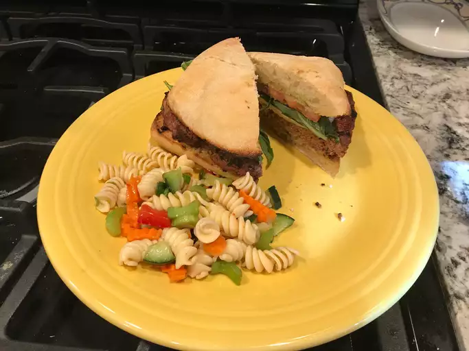

Carpese Burger

Description
I am always looking for ways to jazz up the boring burger and came up with this after having a delicious caprese salad. Be sure to use fresh basil and the marinated tomatoes are a must!
Ingredients
- 1 tablespoon balsamic vinegar
- 1 tablespoon extra virgin olive oil
- 4 hamburger buns, split
- Salt as needed
- 4 ounces fresh mozzarella cheese, sliced
- 1 tablespoon tomato paste
- ¼ cup grated Parmesan cheese
Steps
- Whisk the balsamic vinegar, oil, salt, and pepper in a small bowl. Pour over tomato slices to marinate.
- Preheat an outdoor grill for medium-high heat, and lightly oil the grate.
- Mix ground beef, tomato paste, basil, Parmesan cheese, garlic, and 1/4 teaspoon pepper in a large bowl. Form beef mixture into 4 equal patties.
- Cook on the preheated grill until the burgers are cooked to your desired degree of doneness, about 5 minutes per side for well done. An instant-read thermometer inserted into the center should read 160 degrees F (70 degrees C). Top each burger with mozzarella cheese; allow to melt. Serve on hamburger buns with marinated tomato slices.